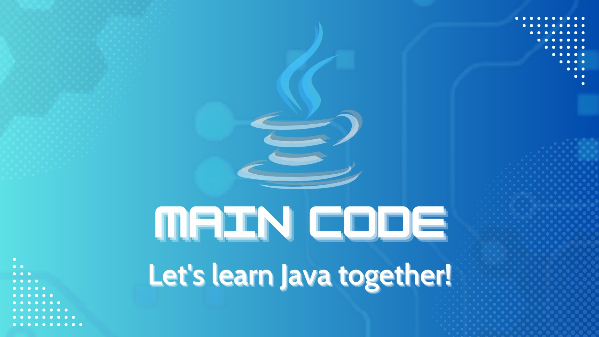

About Us
⭐️ Hello everyone, we are "Main Code"
This is a project that shares knowledge about Java and Object-Oriented Programming, created by a group of students from FPT University - Ho Chi Minh City campus.
🔰 Java is one of the most popular programming languages in the world, developed for various platforms and with a large community of programmers.
🔰 In the second semester at FPT University, in the first Java course - PRO192, you will become familiar with the concept of "Object-Oriented Programming (OOP)". This is a concept that every programmer must master to develop software applications. However, many students find it challenging when entering this phase.
⭐ Realizing this, we have come up with the idea of creating Main Code - a completely free platform that provides specific lessons, focusing on sharing knowledge about Java OOP and being close to FPT students.
⭐️ We hope that this project will help you feel more confident when coding in Java and understanding object-oriented programming.
🎉 Let's look forward to the first installment of the exciting lesson series from "Main Code"!
[Vietnamese translation]
⭐️ Xin chào các bạn, chúng mình là “Main Code"
Dự án chia sẻ kiến thức về Java và Lập trình hướng đối tượng, đến từ nhóm sinh viên đại học FPT - cơ sở HCM.
🔰 Java là một trong những ngôn ngữ lập trình được ưa chuộng nhất thế giới, phát triển được trên nhiều nền tảng khác nhau và có cộng đồng lập trình viên sử dụng đông đảo.
🔰 Trong kỳ 2 tại đại học FPT, ở môn học Java đầu tiên - PRO192, các bạn sẽ làm quen với khái niệm “Lập trình hướng đối tượng (OOP)”. Đây là một khái niệm mà mọi lập trình viên đều phải nắm vững để phát triển được những ứng dụng phần mềm. Thế nhưng, rất nhiều bạn sinh viên cảm thấy khó khăn khi bước vào giai đoạn này.
⭐️ Nhận thấy những điều ấy, chúng mình đã ấp ủ ý tưởng tạo nên Main Code - một nền tảng hoàn toàn miễn phí, gồm chuỗi cái bài học cụ thể, tập trung chia sẻ kiến thức về Java OOP và gần gũi với sinh viên FPT.
⭐️ Hy vọng dự án sẽ giúp các bạn tự tin hơn khi code Java, cũng như lập trình hướng đối tượng.
🎉 Hãy cùng đón chờ số đầu tiên của chuỗi bài học đầy thú vị đến từ “Main Code” nhé!